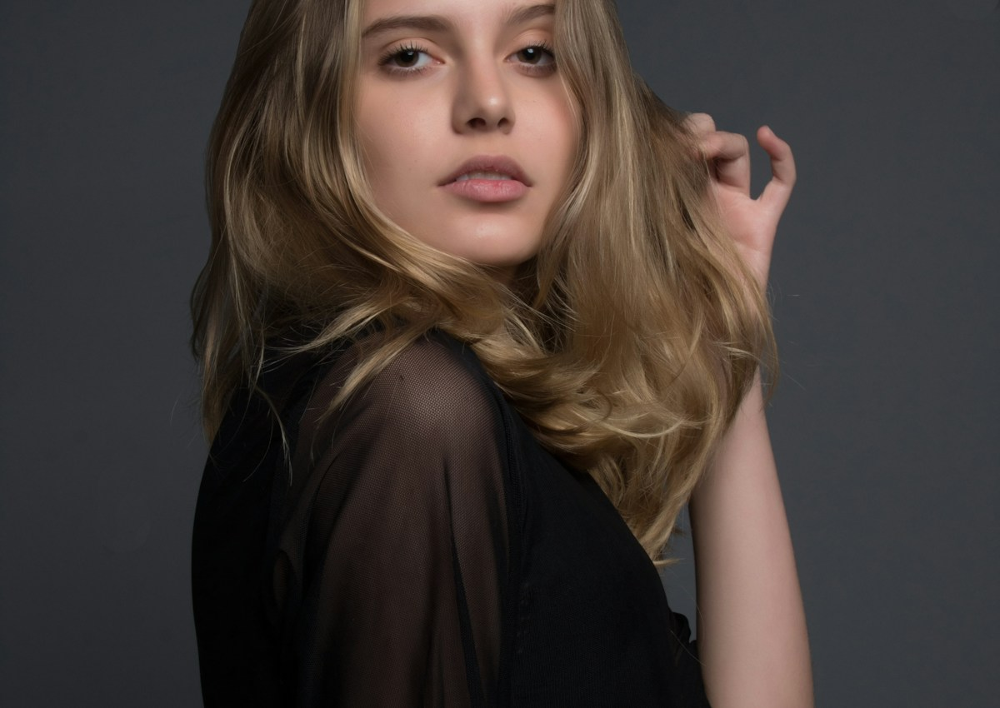
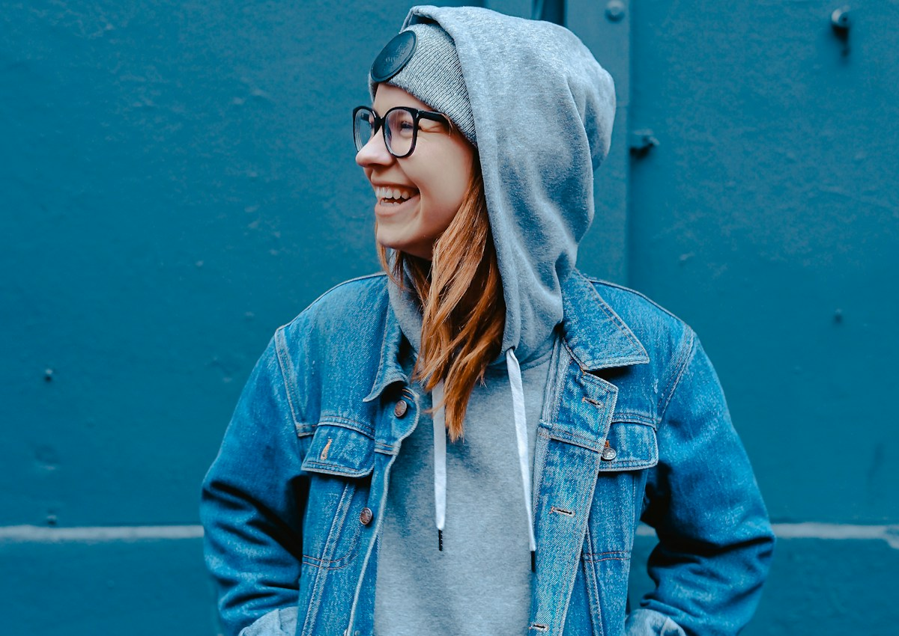

Портретный AI-образ должен быть узнаваемым, а не случайным
Avatar visual — это серия портретных изображений для бренда, social, рекламы или digital-персонажа. Здесь важны не только внешность и стиль, но и ощущение: как персонаж смотрит в кадр, какой у него характер, как работает свет и насколько образ можно повторить в других сценах.

Editorial-портрет помогает задать визуальный характер: уверенность, стиль, взгляд и настроение.
Вариативность образа нужна для social, баннеров, обложек и регулярного контента.
Avatar visual
Серия портретных AI-визуалов для персонажа, бренда или рекламной кампании: образ, свет, настроение, визуальная стабильность и готовность к контенту.
Один персонаж — несколько состояний
Чтобы аватар был живым, нужны разные портретные состояния: спокойный, уверенный, экспертный, эмоциональный, рекламный и lifestyle. При этом персонаж должен оставаться узнаваемым в каждом варианте.

Lifestyle-портрет помогает использовать образ более мягко — для social, сторис и бренд-коммуникации.
Более строгий портрет подходит для экспертной коммуникации, обложек и деловых материалов.
Главное — не потерять одного и того же героя
AI-портреты часто расходятся по лицу и характеру. Поэтому мы задаём визуальные ограничения: повторяемые черты, стабильный свет, похожую пластику и понятный набор сцен.
Портретный набор, который можно использовать регулярно
Итог — серия AI-портретов, которая помогает бренду получить узнаваемого персонажа для social, рекламы, презентаций и digital-материалов.
Что входит в набор
Основной портрет, дополнительные состояния, lifestyle-кадры, рекламные варианты, prompt-правила и рекомендации по использованию.